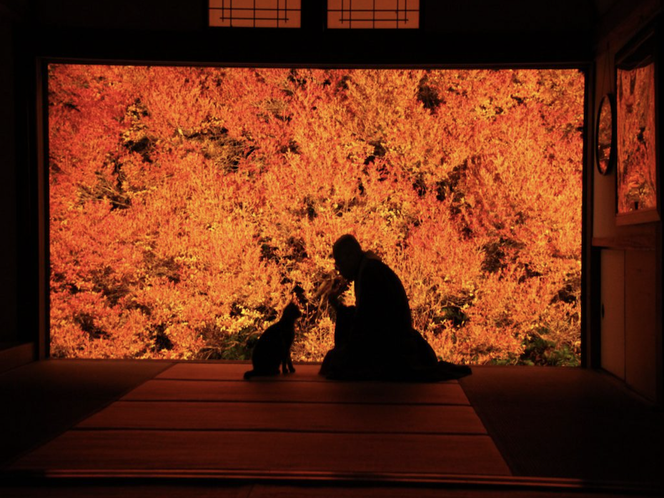
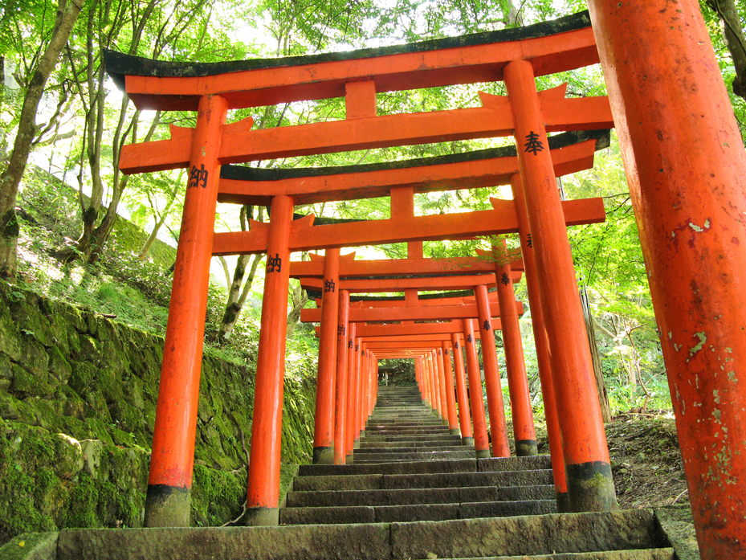

-

-
 -


雲海に浮かぶ竹田城跡、風情ある城崎温泉の町並み、すごくすごい安国寺、荒々しい玄武洞公園の絶景——歴史と自然が織りなす撮影スポットが満載。
幻想的な光景を求めて、朝来・豊岡へ。あなたのレンズで、この瞬間を切り取ろう。
目次
1.幻想的な雲海に浮かぶ天空の城「竹田城跡」
2.燃えるように輝くドウダンツツジの紅葉「安国寺」
3.風情あふれる但馬の小京都「出石城跡」
4.自然が生み出した壮大な石の芸術「玄武洞公園」
5.七つの外湯めぐりが楽しめる関西の奥座敷「城崎温泉」
竹田城跡
・城跡に登れば絶景に出会えると思うと、自然と足が軽くなり、一歩一歩ワクワク感が増していきます！
・決して短い距離ではない登山道を登り、見事竹田城跡に辿りつくことができたなら、そこにはこれまで見たこともない神秘的な空間が広がります！
・まるで翼の生えた天空人になった気分を味わうことができます！
住所
〒669-5252 兵庫県朝来市和田山町竹田古城山169番地
入城時間
午前5時～午後5時
料金
大人（高校生以上）1名 500円
中学生以下 無料
安国寺
・豊岡市但東町相田の安国寺（但馬安國禅寺）は、裏庭の「ドウダンツツジ」が色鮮やかに紅葉することで有名です！
・11月中旬、本堂越しの座敷の向こうに見える深紅に染まる「ドウダンツツジ」は、樹齢約150年、高さ幅共に約10ｍもあり、圧巻の美しさです。まるで額縁に入った絵画を見ているようで、うっとりしてしまいます...！
住所
〒668-0324 兵庫県豊岡市但東町相田３２７
営業時間
午前9時～午後5時
料金
【2024青ドウダン一般公開拝観料】
300円（中学生以下もしくは障害者手帳をお持ちの方は無料）
【ドウダンツツジ紅葉一般公開拝観料】
500円（中学生以下もしくは障害者手帳をお持ちの方は無料）
出石城跡
・歴史を感じる城跡：江戸時代の城の雰囲気が残る！
・白亜の隅櫓：復元された美しい建物が映える！
・石段と城門の風情：登るとちょっとした冒険気分！
・出石皿そばと一緒に楽しめる：城下町グルメも魅力！
・桜や紅葉の名所：四季折々の美しい景色が楽しめる！
玄武洞公園
・石と時間が織りなす自然の神秘に触れることができる！
・六角形の柱みたいな岩がいっぱい！
・5つの洞窟それぞれ違う雰囲気の洞窟が楽しめる！
・すごい自然のパワーを感じられる！
・アジサイがきれいな時期も！
・ミュージアムもあり岩や鉱物について学べる施設もある！
城崎温泉
・7つの外湯めぐり：それぞれ違う雰囲気の温泉を楽しめる！
・風情ある街並み：柳が揺れる川沿いの景色が最高！
・浴衣でそぞろ歩き：温泉街を浴衣で散策するのが風情たっぷり！
・カニや海鮮グルメ：冬は松葉ガニが絶品！
・四季の楽しみ：春は桜、秋は紅葉、冬は雪景色の温泉が格別！
住所
〒669-6101 豊岡市城崎町湯島
入場時間
午後10時30分まで
料金
入浴料 各800円（小学生以下400円）
一日入浴券 大人1500円（小学生以下750円）
まとめ
雲海に包まれる幻想的な竹田城跡、真紅に染まるドウダンツツジが美しい安国寺、情緒あふれる城下町とともに佇む出石城跡。大地が生み出した神秘的な柱状節理が広がる玄武洞公園、そして七つの外湯めぐりが楽しめる温泉街城崎温泉。歴史と自然が織りなす美しい風景を、あなたのレンズで切り取ってみませんか？